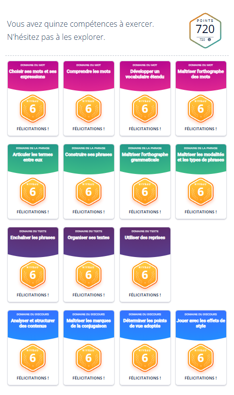
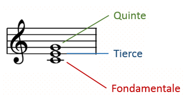
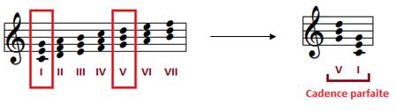
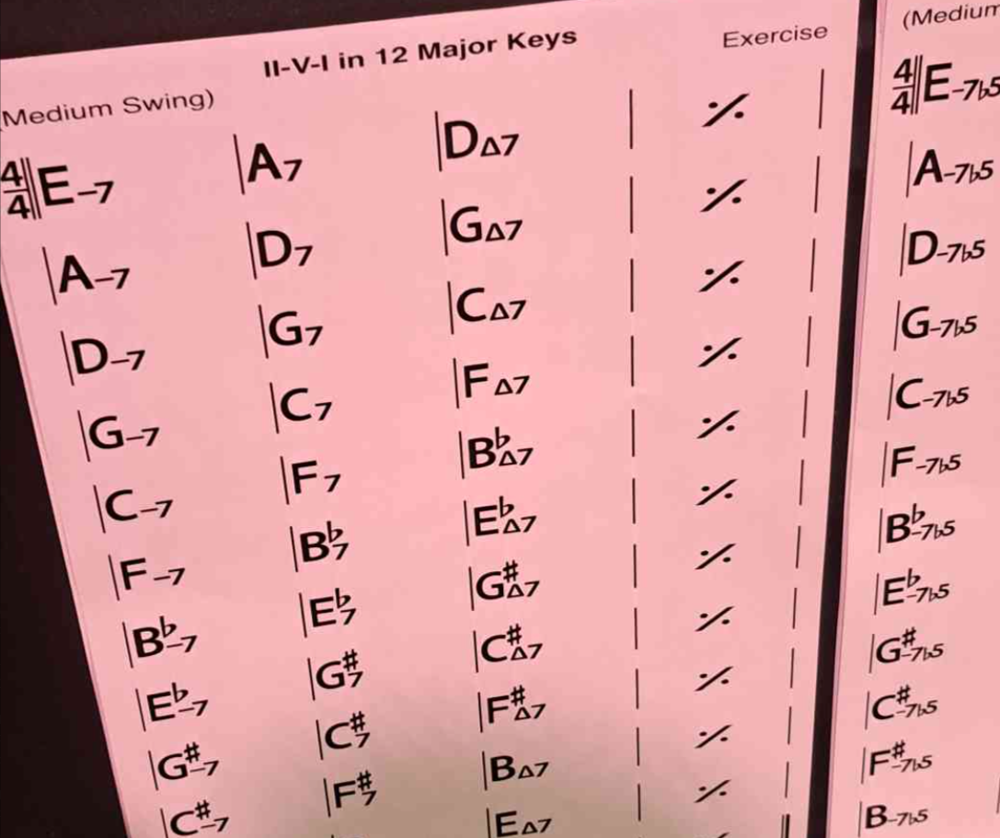

Culture Générale & Curiosité
Parce qu'un bon développeur est aussi quelqu'un d'ouvert sur le monde. Voici comment je nourris ma réflexion personnelle à travers la nature, les langues et les arts.
🐦 Nature & Observation
Objectif : L'écoute active
Plus qu'une simple marche matinale, c'est mon rituel d'observation quotidien.
Dans un monde saturé de bruits, j'ai décidé d'apprendre à vraiment écouter. Mon défi est d'identifier chaque espèce d'oiseau à l'oreille. C'est un exercice de concentration intense : il faut filtrer la ville pour isoler des fréquences spécifiques et reconnaître des motifs rythmiques complexes.
- Analyse de signaux sonores complexes.
- Développement de la mémoire auditive.
- Patience et observation silencieuse.
- Capacité de déduction logique.
- Filtrer le bruit de fond (circulation, ville).
- Distinguer les variations d'un même chant.
- Confusions entre espèces aux timbres proches.
- Pratique en forêt le week-end (environnement calme).
- Utilisation d'applis de validation (BirdNET).
🇯🇵 Passion Japon
Une véritable démarche d'étude autodidacte, bien au-delà du simple loisir.
Je m'intéresse à la structure profonde du pays : sa géographie insulaire qui façonne les mentalités, son histoire féodale et sa gastronomie codifiée. En parallèle, l'apprentissage de la langue est ma clé pour décrypter une logique de pensée contextuelle, aux antipodes de nos langues latines directes.
- Langue : Hiragana, Katakana, Grammaire SOV.
- Écriture : Mémorisation de +800 Kanjis.
- Culture : Codes sociaux (Politesse, Respect).
- Géographie : Préfectures, climats, reliefs.
- Lectures multiples des Kanjis (On'yomi / Kun'yomi).
- Nuances de politesse (Keigo) selon l'interlocuteur.
- Rétention mémorielle sur le très long terme.
- Répétition espacée quotidienne (Anki).
- Immersion via médias natifs (sans sous-titres).
✍️ Compétences Écri+
Savoir coder ne suffit pas : il faut savoir expliquer.
La communication écrite est le vecteur principal de la collaboration technique (documentation, spécifications, emails). J'ai donc validé mon niveau via le dispositif Écri+, en travaillant les subtilités qui garantissent des écrits professionnels clairs, structurés et irréprochables.
- Maîtrise de l'orthographe et de la grammaire.
- Concordance des temps et syntaxe complexe.
- Vocabulaire précis et adapté au contexte pro.
- Structure et clarté du discours écrit.
- Crédibilité immédiate auprès des clients/équipe.
- Rédaction de documentations claires.
- Efficacité dans les échanges écrits.

Niveaux des compétences
🎺 Théorie Musicale & Jazz Improvisé
1. Intervalles : Tierce & Quinte
Les intervalles sont les briques de base de la musique. Empiler des tierces et des quintes permet de construire et de définir chaque accord :
- ▶ Tierce Mineure (3 demi-tons) : Donne une couleur sombre ou triste à l'accord.
- ▶ Tierce Majeure (4 demi-tons) : Donne une couleur brillante ou joyeuse à l'accord.
- ▶ Quinte Juste (7 demi-tons) : Apporte l'ossature, la stabilité parfaite et la consonance.

2. Le Système des Degrés
Une gamme comporte 7 degrés. Chacun possède une fonction de tension ou de repos (Exemple en Do Majeur) :
| Degré | Note | Fonction |
|---|---|---|
| I (Tonique) | Do | Repos, stabilité maximale. |
| II (Sus-tonique) | Ré | Préparation à la dominante. |
| III (Médiante) | Mi | Couleur modale, transition calme. |
| IV (Sous-dominante) | Fa | Mouvement d'éloignement. |
| V (Dominante) | Sol | Tension forte appelant la Tonique. |
| VI (Sus-dominante) | La | Couleur relative mineure. |
| VII (Sensible) | Si | Instabilité extrême, attire le Do. |

3. Cadences & Gammes Altérées
La cadence parfaite (II-V-I) est l'ossature du jazz. Elle est chargée de gérer avec précision le cycle Tension ➝ Résolution :
| Cadence | Accord | Rôle |
|---|---|---|
| II (Prépa) | Dm7 | Initiation du mouvement. |
| V (Tension) | G7 | Dissonance forte (triton). |
| I (Repos) | CMaj7 | Retour à l'équilibre. |
Issue du mineur mélodique, elle est très utile en improvisation pour apporter des couleurs dissonantes uniques. Voici la progression correspondante et le tableau de la gamme :
| Fonction | C Major (Naturel) | C Altered (Dissonant) |
|---|---|---|
| Fondamentale (I) | C | C |
| Neuvièmes (II) | D (9) | Db (b9) et D# (#9) |
| Tierce (III) | E (3) | E (3) |
| Quintes (V) | G (5) | Gb (b5) et G# (#5) |
| Septième (VII) | B (Maj7) | Bb (b7) |
